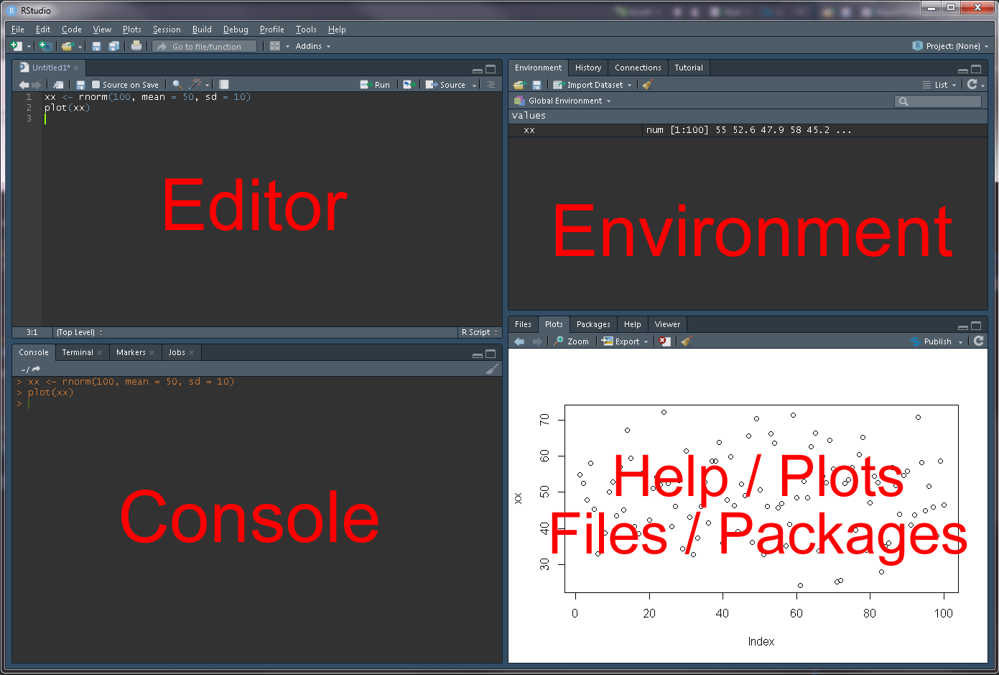
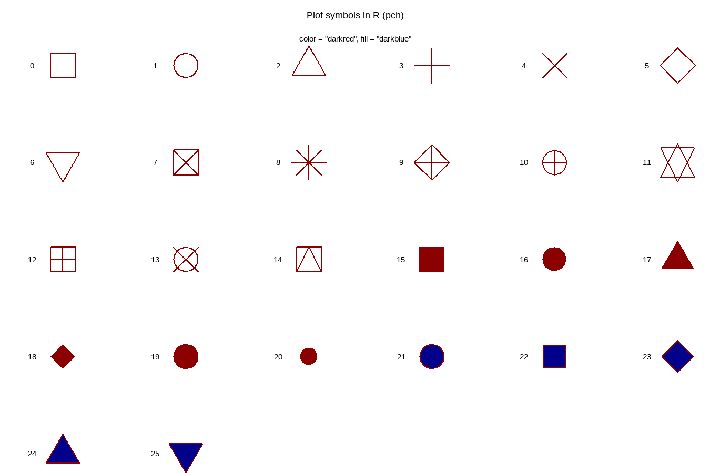

Introduction
This vignette will introduce the reader to R, a free, open-source statistical computing environment and RStudio, a integrated development environment for R.

This vignette will introduce the reader to R, a free, open-source statistical computing environment and RStudio, a integrated development environment for R.


http://r-statistics.co/R-Tutorial.html
https://bookdown.org/rdpeng/exdata/getting-started-with-r.html#installation
R can be used as a super awesome calculator
# 5 + 3 = 8
5 + 3 ## [1] 8# 24 / (1 + 2) = 8
24 / (1 + 2) ## [1] 8# 2 * 2 * 2 = 8
2^3 ## [1] 8# 8 * 8 = 64
sqrt(64) ## [1] 8# -log10(0.05 / 5000000) = 8
-log10(0.05 / 5000000) ## [1] 8R has many useful built in functions
1:10## [1] 1 2 3 4 5 6 7 8 9 10as.character(1:10)## [1] "1" "2" "3" "4" "5" "6" "7" "8" "9" "10"rep(1:2, times = 5)## [1] 1 2 1 2 1 2 1 2 1 2rep(1:5, times = 2)## [1] 1 2 3 4 5 1 2 3 4 5rep(1:5, each = 2)## [1] 1 1 2 2 3 3 4 4 5 5rep(1:5, length.out = 7)## [1] 1 2 3 4 5 1 2help(rep)
seq(5, 50, by = 5)## [1] 5 10 15 20 25 30 35 40 45 50seq(5, 50, length.out = 5)## [1] 5.00 16.25 27.50 38.75 50.00paste(1:10, 20:30, sep = "-")## [1] "1-20" "2-21" "3-22" "4-23" "5-24" "6-25" "7-26" "8-27" "9-28"
## [10] "10-29" "1-30"paste(1:10, collapse = "-")## [1] "1-2-3-4-5-6-7-8-9-10"paste0("x", 1:10)## [1] "x1" "x2" "x3" "x4" "x5" "x6" "x7" "x8" "x9" "x10"min(1:10)## [1] 1max(1:10)## [1] 10range(1:10)## [1] 1 10mean(1:10)## [1] 5.5sd(1:10)## [1] 3.02765Users can also create their own functions
customFunction1 <- function(x, y) {
z <- 100 * x / (x + y)
paste(z, "%")
}
customFunction1(x = 10, y = 90)## [1] "10 %"customFunction2 <- function(x) {
mymin <- mean(x - sd(x))
mymax <- mean(x) + sd(x)
print(paste("Min =", mymin))
print(paste("Max =", mymax))
}
customFunction2(x = 1:10)## [1] "Min = 2.47234964590251"
## [1] "Max = 8.52765035409749"for loops and if else statements
xx <- NULL #creates and empty object
for(i in 1:10) {
xx[i] <- i*3
}
xx## [1] 3 6 9 12 15 18 21 24 27 30xx %% 2 #gives the remainder when divided by 2## [1] 1 0 1 0 1 0 1 0 1 0for(i in 1:length(xx)) {
if((xx[i] %% 2) == 0) {
print(paste(xx[i],"is Even"))
} else {
print(paste(xx[i],"is Odd"))
}
}## [1] "3 is Odd"
## [1] "6 is Even"
## [1] "9 is Odd"
## [1] "12 is Even"
## [1] "15 is Odd"
## [1] "18 is Even"
## [1] "21 is Odd"
## [1] "24 is Even"
## [1] "27 is Odd"
## [1] "30 is Even"# or
ifelse(xx %% 2 == 0, "Even", "Odd")## [1] "Odd" "Even" "Odd" "Even" "Odd" "Even" "Odd" "Even" "Odd" "Even"paste(xx, ifelse(xx %% 2 == 0, "is Even", "is Odd"))## [1] "3 is Odd" "6 is Even" "9 is Odd" "12 is Even" "15 is Odd"
## [6] "18 is Even" "21 is Odd" "24 is Even" "27 is Odd" "30 is Even"Information can be stored in user defined objects, in multiple forms:
c(): a string of valuesmatrix(): a two dimensional matrix in one formatdata.frame(): a two dimensional matrix where each column can be a different formatlist():A string…
xc <- 1:10
xc## [1] 1 2 3 4 5 6 7 8 9 10xc <- c(1,2,3,4,5,6,7,8,9,10)
xc## [1] 1 2 3 4 5 6 7 8 9 10A matrix…
xm <- matrix(1:100, nrow = 10, ncol = 10, byrow = T)
xm## [,1] [,2] [,3] [,4] [,5] [,6] [,7] [,8] [,9] [,10]
## [1,] 1 2 3 4 5 6 7 8 9 10
## [2,] 11 12 13 14 15 16 17 18 19 20
## [3,] 21 22 23 24 25 26 27 28 29 30
## [4,] 31 32 33 34 35 36 37 38 39 40
## [5,] 41 42 43 44 45 46 47 48 49 50
## [6,] 51 52 53 54 55 56 57 58 59 60
## [7,] 61 62 63 64 65 66 67 68 69 70
## [8,] 71 72 73 74 75 76 77 78 79 80
## [9,] 81 82 83 84 85 86 87 88 89 90
## [10,] 91 92 93 94 95 96 97 98 99 100xm <- matrix(1:100, nrow = 10, ncol = 10, byrow = F)
xm## [,1] [,2] [,3] [,4] [,5] [,6] [,7] [,8] [,9] [,10]
## [1,] 1 11 21 31 41 51 61 71 81 91
## [2,] 2 12 22 32 42 52 62 72 82 92
## [3,] 3 13 23 33 43 53 63 73 83 93
## [4,] 4 14 24 34 44 54 64 74 84 94
## [5,] 5 15 25 35 45 55 65 75 85 95
## [6,] 6 16 26 36 46 56 66 76 86 96
## [7,] 7 17 27 37 47 57 67 77 87 97
## [8,] 8 18 28 38 48 58 68 78 88 98
## [9,] 9 19 29 39 49 59 69 79 89 99
## [10,] 10 20 30 40 50 60 70 80 90 100A data frame…
xd <- data.frame(
x1 = c("aa","bb","cc","dd","ee",
"ff","gg","hh","ii","jj"),
x2 = 1:10,
x3 = c(1,1,1,1,1,2,2,2,3,3),
x4 = rep(c(1,2), times = 5),
x5 = rep(1:5, times = 2),
x6 = rep(1:5, each = 2),
x7 = seq(5, 50, by = 5),
x8 = log10(1:10),
x9 = (1:10)^3,
x10 = c(T,T,T,F,F,T,T,F,F,F)
)
xd## x1 x2 x3 x4 x5 x6 x7 x8 x9 x10
## 1 aa 1 1 1 1 1 5 0.0000000 1 TRUE
## 2 bb 2 1 2 2 1 10 0.3010300 8 TRUE
## 3 cc 3 1 1 3 2 15 0.4771213 27 TRUE
## 4 dd 4 1 2 4 2 20 0.6020600 64 FALSE
## 5 ee 5 1 1 5 3 25 0.6989700 125 FALSE
## 6 ff 6 2 2 1 3 30 0.7781513 216 TRUE
## 7 gg 7 2 1 2 4 35 0.8450980 343 TRUE
## 8 hh 8 2 2 3 4 40 0.9030900 512 FALSE
## 9 ii 9 3 1 4 5 45 0.9542425 729 FALSE
## 10 jj 10 3 2 5 5 50 1.0000000 1000 FALSEA list…
xl <- list(xc, xm, xd)
xl[[1]]## [1] 1 2 3 4 5 6 7 8 9 10xl[[2]]## [,1] [,2] [,3] [,4] [,5] [,6] [,7] [,8] [,9] [,10]
## [1,] 1 11 21 31 41 51 61 71 81 91
## [2,] 2 12 22 32 42 52 62 72 82 92
## [3,] 3 13 23 33 43 53 63 73 83 93
## [4,] 4 14 24 34 44 54 64 74 84 94
## [5,] 5 15 25 35 45 55 65 75 85 95
## [6,] 6 16 26 36 46 56 66 76 86 96
## [7,] 7 17 27 37 47 57 67 77 87 97
## [8,] 8 18 28 38 48 58 68 78 88 98
## [9,] 9 19 29 39 49 59 69 79 89 99
## [10,] 10 20 30 40 50 60 70 80 90 100xl[[3]]## x1 x2 x3 x4 x5 x6 x7 x8 x9 x10
## 1 aa 1 1 1 1 1 5 0.0000000 1 TRUE
## 2 bb 2 1 2 2 1 10 0.3010300 8 TRUE
## 3 cc 3 1 1 3 2 15 0.4771213 27 TRUE
## 4 dd 4 1 2 4 2 20 0.6020600 64 FALSE
## 5 ee 5 1 1 5 3 25 0.6989700 125 FALSE
## 6 ff 6 2 2 1 3 30 0.7781513 216 TRUE
## 7 gg 7 2 1 2 4 35 0.8450980 343 TRUE
## 8 hh 8 2 2 3 4 40 0.9030900 512 FALSE
## 9 ii 9 3 1 4 5 45 0.9542425 729 FALSE
## 10 jj 10 3 2 5 5 50 1.0000000 1000 FALSESelecting data…
xc[5] # 5th element in xc## [1] 5xd$x3[5] # 5th element in col "x3"## [1] 1xd[5,"x3"] # row 5, col "x3"## [1] 1xd$x3 # all of col "x3"## [1] 1 1 1 1 1 2 2 2 3 3xd[,"x3"] # all rows, col "x3"## [1] 1 1 1 1 1 2 2 2 3 3xd[3,] # row 3, all cols## x1 x2 x3 x4 x5 x6 x7 x8 x9 x10
## 3 cc 3 1 1 3 2 15 0.4771213 27 TRUExd[c(2,4),c("x4","x5")] # rows 2 & 4, cols "x4" & "x5"## x4 x5
## 2 2 2
## 4 2 4xl[[3]]$x1 # 3rd object in the list, col "x1## [1] "aa" "bb" "cc" "dd" "ee" "ff" "gg" "hh" "ii" "jj"Data can also be saved in many formats:
xd$x3 <- as.character(xd$x3)
xd$x3## [1] "1" "1" "1" "1" "1" "2" "2" "2" "3" "3"xd$x3 <- as.numeric(xd$x3)
xd$x3## [1] 1 1 1 1 1 2 2 2 3 3xd$x3 <- as.factor(xd$x3)
xd$x3## [1] 1 1 1 1 1 2 2 2 3 3
## Levels: 1 2 3xd$x3 <- factor(xd$x3, levels = c("3","2","1"))
xd$x3## [1] 1 1 1 1 1 2 2 2 3 3
## Levels: 3 2 1xd$x10## [1] TRUE TRUE TRUE FALSE FALSE TRUE TRUE FALSE FALSE FALSEas.numeric(xd$x10) # TRUE = 1, FALSE = 0## [1] 1 1 1 0 0 1 1 0 0 0sum(xd$x10)## [1] 5Internal structure of an object can be checked with str()
str(xc) # c()## num [1:10] 1 2 3 4 5 6 7 8 9 10str(xm) # matrix()## int [1:10, 1:10] 1 2 3 4 5 6 7 8 9 10 ...str(xd) # data.frame()## 'data.frame': 10 obs. of 10 variables:
## $ x1 : chr "aa" "bb" "cc" "dd" ...
## $ x2 : int 1 2 3 4 5 6 7 8 9 10
## $ x3 : Factor w/ 3 levels "3","2","1": 3 3 3 3 3 2 2 2 1 1
## $ x4 : num 1 2 1 2 1 2 1 2 1 2
## $ x5 : int 1 2 3 4 5 1 2 3 4 5
## $ x6 : int 1 1 2 2 3 3 4 4 5 5
## $ x7 : num 5 10 15 20 25 30 35 40 45 50
## $ x8 : num 0 0.301 0.477 0.602 0.699 ...
## $ x9 : num 1 8 27 64 125 216 343 512 729 1000
## $ x10: logi TRUE TRUE TRUE FALSE FALSE TRUE ...str(xl) # list()## List of 3
## $ : num [1:10] 1 2 3 4 5 6 7 8 9 10
## $ : int [1:10, 1:10] 1 2 3 4 5 6 7 8 9 10 ...
## $ :'data.frame': 10 obs. of 10 variables:
## ..$ x1 : chr [1:10] "aa" "bb" "cc" "dd" ...
## ..$ x2 : int [1:10] 1 2 3 4 5 6 7 8 9 10
## ..$ x3 : num [1:10] 1 1 1 1 1 2 2 2 3 3
## ..$ x4 : num [1:10] 1 2 1 2 1 2 1 2 1 2
## ..$ x5 : int [1:10] 1 2 3 4 5 1 2 3 4 5
## ..$ x6 : int [1:10] 1 1 2 2 3 3 4 4 5 5
## ..$ x7 : num [1:10] 5 10 15 20 25 30 35 40 45 50
## ..$ x8 : num [1:10] 0 0.301 0.477 0.602 0.699 ...
## ..$ x9 : num [1:10] 1 8 27 64 125 216 343 512 729 1000
## ..$ x10: logi [1:10] TRUE TRUE TRUE FALSE FALSE TRUE ...Additional libraries can be installed and loaded for use.
install.packages("scales")library(scales)
xx <- data.frame(Values = 1:10)
xx$Rescaled <- rescale(x = xx$Values, to = c(1,30))
xx## Values Rescaled
## 1 1 1.000000
## 2 2 4.222222
## 3 3 7.444444
## 4 4 10.666667
## 5 5 13.888889
## 6 6 17.111111
## 7 7 20.333333
## 8 8 23.555556
## 9 9 26.777778
## 10 10 30.000000xx <- data.frame(Group = c("X","X","Y","Y","Y","X","X","X","Y","Y"),
Data1 = 1:10,
Data2 = seq(10, 100, by = 10))
xx$NewData1 <- xx$Data1 + xx$Data2
xx$NewData2 <- xx$Data1 * 1000
xx## Group Data1 Data2 NewData1 NewData2
## 1 X 1 10 11 1000
## 2 X 2 20 22 2000
## 3 Y 3 30 33 3000
## 4 Y 4 40 44 4000
## 5 Y 5 50 55 5000
## 6 X 6 60 66 6000
## 7 X 7 70 77 7000
## 8 X 8 80 88 8000
## 9 Y 9 90 99 9000
## 10 Y 10 100 110 10000xx$Data1 < 5 # which are less than 5## [1] TRUE TRUE TRUE TRUE FALSE FALSE FALSE FALSE FALSE FALSExx[xx$Data1 < 5,]## Group Data1 Data2 NewData1 NewData2
## 1 X 1 10 11 1000
## 2 X 2 20 22 2000
## 3 Y 3 30 33 3000
## 4 Y 4 40 44 4000xx[xx$Group == "X", c("Group","Data2","NewData1")]## Group Data2 NewData1
## 1 X 10 11
## 2 X 20 22
## 6 X 60 66
## 7 X 70 77
## 8 X 80 88Data wrangling with tidyverse and pipes (%>%)
library(tidyverse) # install.packages("tidyverse")
xx <- data.frame(Group = c("X","X","Y","Y","Y","Y","Y","X","X","X")) %>%
mutate(Data1 = 1:10,
Data2 = seq(10, 100, by = 10),
NewData1 = Data1 + Data2,
NewData2 = Data1 * 1000)
xx## Group Data1 Data2 NewData1 NewData2
## 1 X 1 10 11 1000
## 2 X 2 20 22 2000
## 3 Y 3 30 33 3000
## 4 Y 4 40 44 4000
## 5 Y 5 50 55 5000
## 6 Y 6 60 66 6000
## 7 Y 7 70 77 7000
## 8 X 8 80 88 8000
## 9 X 9 90 99 9000
## 10 X 10 100 110 10000filter(xx, Data1 < 5)## Group Data1 Data2 NewData1 NewData2
## 1 X 1 10 11 1000
## 2 X 2 20 22 2000
## 3 Y 3 30 33 3000
## 4 Y 4 40 44 4000xx %>% filter(Data1 < 5)## Group Data1 Data2 NewData1 NewData2
## 1 X 1 10 11 1000
## 2 X 2 20 22 2000
## 3 Y 3 30 33 3000
## 4 Y 4 40 44 4000xx %>% filter(Group == "X") %>%
select(Group, NewColName=Data2, NewData1)## Group NewColName NewData1
## 1 X 10 11
## 2 X 20 22
## 3 X 80 88
## 4 X 90 99
## 5 X 100 110xs <- xx %>%
group_by(Group) %>%
summarise(Data2_mean = mean(Data2),
Data2_sd = sd(Data2),
NewData2_mean = mean(NewData2),
NewData2_sd = sd(NewData2))
xs## # A tibble: 2 x 5
## Group Data2_mean Data2_sd NewData2_mean NewData2_sd
## <chr> <dbl> <dbl> <dbl> <dbl>
## 1 X 60 41.8 6000 4183.
## 2 Y 50 15.8 5000 1581.xx %>% left_join(xs, by = "Group")## Group Data1 Data2 NewData1 NewData2 Data2_mean Data2_sd NewData2_mean
## 1 X 1 10 11 1000 60 41.83300 6000
## 2 X 2 20 22 2000 60 41.83300 6000
## 3 Y 3 30 33 3000 50 15.81139 5000
## 4 Y 4 40 44 4000 50 15.81139 5000
## 5 Y 5 50 55 5000 50 15.81139 5000
## 6 Y 6 60 66 6000 50 15.81139 5000
## 7 Y 7 70 77 7000 50 15.81139 5000
## 8 X 8 80 88 8000 60 41.83300 6000
## 9 X 9 90 99 9000 60 41.83300 6000
## 10 X 10 100 110 10000 60 41.83300 6000
## NewData2_sd
## 1 4183.300
## 2 4183.300
## 3 1581.139
## 4 1581.139
## 5 1581.139
## 6 1581.139
## 7 1581.139
## 8 4183.300
## 9 4183.300
## 10 4183.300xx <- read.csv("Data.csv")
write.csv(xx, "Data.csv", row.names = F)For excel sheets, the package readxl can be used to read in sheets of data.
library(readxl) # install.packages("readxl")
xx <- read_xlsx("Data.xlsx", sheet = "Data")https://cran.r-project.org/web/packages/tidyr/vignettes/tidy-data.html
https://r4ds.had.co.nz/tidy-data.html
yy <- xx %>%
group_by(Name, Location) %>%
summarise(Mean_DTF = round(mean(DTF),1)) %>%
arrange(Location)
yy## # A tibble: 9 x 3
## # Groups: Name [3]
## Name Location Mean_DTF
## <chr> <chr> <dbl>
## 1 CDC Maxim AGL Jessore, Bangladesh 86.7
## 2 ILL 618 AGL Jessore, Bangladesh 79.3
## 3 Laird AGL Jessore, Bangladesh 76.8
## 4 CDC Maxim AGL Metaponto, Italy 134.
## 5 ILL 618 AGL Metaponto, Italy 138.
## 6 Laird AGL Metaponto, Italy 137.
## 7 CDC Maxim AGL Saskatoon, Canada 52.5
## 8 ILL 618 AGL Saskatoon, Canada 47
## 9 Laird AGL Saskatoon, Canada 56.8yy <- yy %>% spread(key = Location, value = Mean_DTF)
yy## # A tibble: 3 x 4
## # Groups: Name [3]
## Name `Jessore, Bangladesh` `Metaponto, Italy` `Saskatoon, Canada`
## <chr> <dbl> <dbl> <dbl>
## 1 CDC Maxim AGL 86.7 134. 52.5
## 2 ILL 618 AGL 79.3 138. 47
## 3 Laird AGL 76.8 137. 56.8yy <- yy %>% gather(key = TraitName, value = Value, 2:4)
yy## # A tibble: 9 x 3
## # Groups: Name [3]
## Name TraitName Value
## <chr> <chr> <dbl>
## 1 CDC Maxim AGL Jessore, Bangladesh 86.7
## 2 ILL 618 AGL Jessore, Bangladesh 79.3
## 3 Laird AGL Jessore, Bangladesh 76.8
## 4 CDC Maxim AGL Metaponto, Italy 134.
## 5 ILL 618 AGL Metaponto, Italy 138.
## 6 Laird AGL Metaponto, Italy 137.
## 7 CDC Maxim AGL Saskatoon, Canada 52.5
## 8 ILL 618 AGL Saskatoon, Canada 47
## 9 Laird AGL Saskatoon, Canada 56.8yy <- yy %>% spread(key = Name, value = Value)
yy## # A tibble: 3 x 4
## TraitName `CDC Maxim AGL` `ILL 618 AGL` `Laird AGL`
## <chr> <dbl> <dbl> <dbl>
## 1 Jessore, Bangladesh 86.7 79.3 76.8
## 2 Metaponto, Italy 134. 138. 137.
## 3 Saskatoon, Canada 52.5 47 56.8We will start with some basic plotting using the base function plot()
http://www.sthda.com/english/wiki/r-base-graphs
https://bookdown.org/rdpeng/exdata/the-base-plotting-system-1.html
# A basic scatter plot
plot(x = xd$x8, y = xd$x9)
# Adjust color and shape of the points
plot(x = xd$x8, y = xd$x9, col = "darkred", pch = 0)
plot(x = xd$x8, y = xd$x9, col = xd$x4, pch = xd$x4)
# Adjust plot type
plot(x = xd$x8, y = xd$x9, type = "line")
# Adjust linetype
plot(x = xd$x8, y = xd$x9, type = "line", lty = 2)
# Plot lines and points
plot(x = xd$x8, y = xd$x9, type = "both")
Now lets create some random and normally distributed data to make some more complicated plots
# 100 random uniformly distributed numbers ranging from 0 - 100
ru <- runif(100, min = 0, max = 100)
ru## [1] 10.0654431 71.1362170 48.0226385 45.0793750 8.6070164 7.2119815
## [7] 73.1139784 19.6867939 31.1887827 69.4670066 85.3075765 95.0837801
## [13] 23.9617265 63.6462966 98.2442239 34.4408567 78.1991657 10.6065480
## [19] 0.2326539 91.9238118 11.4014076 71.5566356 80.5327838 50.4676112
## [25] 55.7883871 60.8598008 47.1777601 5.5385148 34.4260476 54.2860550
## [31] 3.2540895 88.9019258 71.8916336 24.3712389 98.6963372 84.8139356
## [37] 2.2346800 76.3780617 52.3364124 49.6321926 23.1853069 66.9863410
## [43] 67.9569436 25.1284277 82.7162258 15.5233533 83.0812683 90.7981459
## [49] 22.2634068 33.8195860 17.1409229 0.8096290 70.4520095 65.0464989
## [55] 80.0981584 79.2958441 33.0971478 53.0879226 60.5422982 45.9814274
## [61] 61.9220235 5.4641012 24.9523039 50.9401184 29.3960802 69.6446519
## [67] 60.7851159 81.8363638 65.7779845 11.8605876 78.2466238 47.1535083
## [73] 22.8416068 23.8077128 64.2567447 74.6559463 40.3100896 32.4521257
## [79] 76.2506091 23.6917821 66.4478801 27.7067874 66.7306609 47.2610206
## [85] 50.2068940 38.2598748 84.4557229 52.9329225 72.9069559 56.9636779
## [91] 42.6101619 13.7753260 42.3015585 12.1270898 82.8236326 26.0447371
## [97] 80.1356257 32.1954650 61.7080437 51.3641680plot(x = ru)
order(ru)## [1] 19 52 37 31 62 28 6 5 1 18 21 70 94 92 46 51 8 49
## [19] 73 41 80 74 13 34 63 44 96 82 65 9 98 78 57 50 29 16
## [37] 86 77 93 91 4 60 72 27 84 3 40 85 24 64 100 39 88 58
## [55] 30 25 90 59 67 26 99 61 14 75 54 69 81 83 42 43 10 66
## [73] 53 2 22 33 89 7 76 79 38 17 71 56 55 97 23 68 45 95
## [91] 47 87 36 11 32 48 20 12 15 35ru<- ru[order(ru)]
ru## [1] 0.2326539 0.8096290 2.2346800 3.2540895 5.4641012 5.5385148
## [7] 7.2119815 8.6070164 10.0654431 10.6065480 11.4014076 11.8605876
## [13] 12.1270898 13.7753260 15.5233533 17.1409229 19.6867939 22.2634068
## [19] 22.8416068 23.1853069 23.6917821 23.8077128 23.9617265 24.3712389
## [25] 24.9523039 25.1284277 26.0447371 27.7067874 29.3960802 31.1887827
## [31] 32.1954650 32.4521257 33.0971478 33.8195860 34.4260476 34.4408567
## [37] 38.2598748 40.3100896 42.3015585 42.6101619 45.0793750 45.9814274
## [43] 47.1535083 47.1777601 47.2610206 48.0226385 49.6321926 50.2068940
## [49] 50.4676112 50.9401184 51.3641680 52.3364124 52.9329225 53.0879226
## [55] 54.2860550 55.7883871 56.9636779 60.5422982 60.7851159 60.8598008
## [61] 61.7080437 61.9220235 63.6462966 64.2567447 65.0464989 65.7779845
## [67] 66.4478801 66.7306609 66.9863410 67.9569436 69.4670066 69.6446519
## [73] 70.4520095 71.1362170 71.5566356 71.8916336 72.9069559 73.1139784
## [79] 74.6559463 76.2506091 76.3780617 78.1991657 78.2466238 79.2958441
## [85] 80.0981584 80.1356257 80.5327838 81.8363638 82.7162258 82.8236326
## [91] 83.0812683 84.4557229 84.8139356 85.3075765 88.9019258 90.7981459
## [97] 91.9238118 95.0837801 98.2442239 98.6963372plot(x = ru)
# 100 normally distributed numbers with a mean of 50 and sd of 10
nd <- rnorm(100, mean = 50, sd = 10)
nd## [1] 57.52555 39.91151 57.67723 66.04471 64.49379 47.43726 73.61482 40.02485
## [9] 50.01869 40.99512 53.40999 46.63156 42.62959 52.36531 50.30406 45.86697
## [17] 32.31221 53.33606 56.98967 43.52841 52.95081 50.47650 61.84069 50.51984
## [25] 35.21599 58.78811 33.96442 47.96658 52.82508 50.60902 56.11116 47.52112
## [33] 63.53152 39.25843 64.15857 59.28193 36.15464 52.20231 46.61416 37.49271
## [41] 41.48758 49.77331 33.65890 35.62437 65.87056 24.02283 53.25740 45.05528
## [49] 62.38543 73.41208 58.72354 43.07431 45.84740 46.68134 59.72645 34.82045
## [57] 60.52559 60.42264 46.91643 43.39220 57.05577 50.88818 64.66941 54.94795
## [65] 52.18408 22.19916 52.68490 58.86229 48.04148 60.34898 35.74004 57.22561
## [73] 40.76883 51.87192 49.09163 51.71074 30.50240 47.20065 37.69443 48.34237
## [81] 49.82524 59.76111 47.49035 67.96271 42.17198 53.44564 46.35773 44.38832
## [89] 42.26475 51.96347 49.78312 58.60813 44.12381 46.06739 55.12050 55.00824
## [97] 45.40112 37.02979 37.67981 51.71968nd <- nd[order(nd)]
nd## [1] 22.19916 24.02283 30.50240 32.31221 33.65890 33.96442 34.82045 35.21599
## [9] 35.62437 35.74004 36.15464 37.02979 37.49271 37.67981 37.69443 39.25843
## [17] 39.91151 40.02485 40.76883 40.99512 41.48758 42.17198 42.26475 42.62959
## [25] 43.07431 43.39220 43.52841 44.12381 44.38832 45.05528 45.40112 45.84740
## [33] 45.86697 46.06739 46.35773 46.61416 46.63156 46.68134 46.91643 47.20065
## [41] 47.43726 47.49035 47.52112 47.96658 48.04148 48.34237 49.09163 49.77331
## [49] 49.78312 49.82524 50.01869 50.30406 50.47650 50.51984 50.60902 50.88818
## [57] 51.71074 51.71968 51.87192 51.96347 52.18408 52.20231 52.36531 52.68490
## [65] 52.82508 52.95081 53.25740 53.33606 53.40999 53.44564 54.94795 55.00824
## [73] 55.12050 56.11116 56.98967 57.05577 57.22561 57.52555 57.67723 58.60813
## [81] 58.72354 58.78811 58.86229 59.28193 59.72645 59.76111 60.34898 60.42264
## [89] 60.52559 61.84069 62.38543 63.53152 64.15857 64.49379 64.66941 65.87056
## [97] 66.04471 67.96271 73.41208 73.61482plot(x = nd)
hist(x = nd)
hist(nd, breaks = 20, col = "darkgreen")
plot(x = density(nd))
boxplot(x = nd)
boxplot(x = nd, horizontal = T)
Lets be honest, the base plots are ugly! The ggplot2 package gives the user to create a better, more visually appealing plots. Additional packages such as ggbeeswarm and ggrepel also contain useful functions to add to the functionality of ggplot2.
https://ggplot2.tidyverse.org/
https://www.r-graph-gallery.com/ggplot2-package.html
http://r-statistics.co/ggplot2-Tutorial-With-R.html
https://www.statsandr.com/blog/graphics-in-r-with-ggplot2/
library(ggplot2)
mp <- ggplot(xd, aes(x = x8, y = x9))
mp + geom_point()
mp + geom_point(aes(color = x3, shape = x3), size = 4)
mp + geom_line(size = 2)
mp + geom_line(aes(color = x3), size = 2)
mp + geom_smooth(method = "loess")
mp + geom_smooth(method = "lm")
xx <- data.frame(data = c(rnorm(50, mean = 40, sd = 10),
rnorm(50, mean = 60, sd = 5)),
group = factor(rep(1:2, each = 50)),
label = c("Label1", rep(NA, 49), "Label2", rep(NA, 49)))
mp <- ggplot(xx, aes(x = data, fill = group))
mp + geom_histogram(color = "black")
mp + geom_histogram(color = "black", position = "dodge")
mp1 <- mp + geom_histogram(color = "black") + facet_grid(group~.)
mp1
mp + geom_density(alpha = 0.5)
mp <- ggplot(xx, aes(x = group, y = data, fill = group))
mp + geom_boxplot(color = "black")
mp + geom_boxplot() + geom_point()
mp + geom_violin() + geom_boxplot(width = 0.1, fill = "white")
library(ggbeeswarm)
mp + geom_quasirandom()
mp + geom_quasirandom(aes(shape = group))
mp2 <- mp + geom_violin() +
geom_boxplot(width = 0.1, fill = "white") +
geom_beeswarm(alpha = 0.5)
library(ggrepel)
mp2 + geom_text_repel(aes(label = label), nudge_x = 0.4)
library(ggpubr)
ggarrange(mp1, mp2, ncol = 2, widths = c(2,1),
common.legend = T, legend = "bottom")
https://rcompanion.org/rcompanion/a_02.html
# Prep data
lev_Loc <- c("Saskatoon, Canada", "Jessore, Bangladesh", "Metaponto, Italy")
lev_Name <- c("ILL 618 AGL", "CDC Maxim AGL", "Laird AGL")
dd <- read_xlsx("Data.xlsx", sheet = "Data") %>%
mutate(Location = factor(Location, levels = lev_Loc),
Name = factor(Name, levels = lev_Name))
xx <- dd %>%
group_by(Name, Location) %>%
summarise(Mean_DTF = mean(DTF))
xx %>% spread(Location, Mean_DTF)## # A tibble: 3 x 4
## # Groups: Name [3]
## Name `Saskatoon, Canada` `Jessore, Bangladesh` `Metaponto, Italy`
## <fct> <dbl> <dbl> <dbl>
## 1 ILL 618 AGL 47 79.3 138.
## 2 CDC Maxim AGL 52.5 86.7 134.
## 3 Laird AGL 56.8 76.8 137.# Plot
mp1 <- ggplot(dd, aes(x = Location, y = DTF, color = Name, shape = Name)) +
geom_point(size = 2, alpha = 0.7, position = position_dodge(width=0.5))
mp2 <- ggplot(xx, aes(x = Location, y = Mean_DTF, color = Name, group = Name, shape = Name)) +
geom_point(size = 2.5, alpha = 0.7) +
geom_line(size = 1, alpha = 0.7) +
theme(legend.position = "top")
ggarrange(mp1, mp2, ncol = 2, common.legend = T, legend = "top")
From first glace, it is clear there are differences between genotypes, locations, and genotype x environment (GxE) interactions. Now let’s do a few statistical tests.
summary(aov(DTF ~ Name * Location, data = dd))## Df Sum Sq Mean Sq F value Pr(>F)
## Name 2 88 44 3.476 0.0395 *
## Location 2 65863 32932 2598.336 < 2e-16 ***
## Name:Location 4 560 140 11.044 2.52e-06 ***
## Residuals 45 570 13
## ---
## Signif. codes: 0 '***' 0.001 '**' 0.01 '*' 0.05 '.' 0.1 ' ' 1As expected, an ANOVA shows statistical significance for genotype (p-value = 0.0395), Location (p-value < 2e-16) and GxE interactions (p-value < 2.52e-06). However, all this tells us is that one genotype is different from the rest, one location is different from the others and that there is GxE interactions. If we want to be more specific, we can filter the data and perform say a t-test to compare two groups.
xx <- dd %>%
filter(Location %in% c("Saskatoon, Canada", "Jessore, Bangladesh")) %>%
spread(Location, DTF)
t.test(x = xx$`Saskatoon, Canada`, y = xx$`Jessore, Bangladesh`)##
## Welch Two Sample t-test
##
## data: xx$`Saskatoon, Canada` and xx$`Jessore, Bangladesh`
## t = -17.521, df = 32.701, p-value < 2.2e-16
## alternative hypothesis: true difference in means is not equal to 0
## 95 percent confidence interval:
## -32.18265 -25.48402
## sample estimates:
## mean of x mean of y
## 52.11111 80.94444DTF in Saskatoon, Canada is significantly different (p-value < 2.2e-16) from DTF in Jessore, Bangladesh.
xx <- dd %>%
filter(Name %in% c("ILL 618 AGL", "Laird AGL"),
Location == "Metaponto, Italy") %>%
spread(Name, DTF)
t.test(x = xx$`ILL 618 AGL`, y = xx$`Laird AGL`)##
## Welch Two Sample t-test
##
## data: xx$`ILL 618 AGL` and xx$`Laird AGL`
## t = 0.38008, df = 8.0564, p-value = 0.7137
## alternative hypothesis: true difference in means is not equal to 0
## 95 percent confidence interval:
## -5.059739 7.059739
## sample estimates:
## mean of x mean of y
## 137.8333 136.8333DTF between ILL 618 AGL and Laird AGL are not significantly different (p-value = 0.7137) in Metaponto, Italy.
xx <- data.frame(x = rep(1:6, times = 5, length.out = 26),
y = rep(5:1, each = 6, length.out = 26),
pch = 0:25)
mp <- ggplot(xx, aes(x = x, y = y, shape = as.factor(pch))) +
geom_point(color = "darkred", fill = "darkblue", size = 5) +
geom_text(aes(label = pch), nudge_x = -0.25) +
scale_shape_manual(values = xx$pch) +
scale_x_continuous(breaks = 6:1) +
scale_y_continuous(breaks = 6:1) +
theme_void() +
theme(legend.position = "none",
plot.title = element_text(hjust = 0.5),
plot.subtitle = element_text(hjust = 0.5),
axis.text = element_blank(),
axis.ticks = element_blank()) +
labs(title = "Plot symbols in R (pch)",
subtitle = "color = \"darkred\", fill = \"darkblue\"",
x = NULL, y = NULL)
ggsave("pch.png", mp, width = 4.5, height = 3)
Tutorials on how to create an R markdown document like this one can be found here:
© Derek Michael Wright 2020 www.dblogr.com/